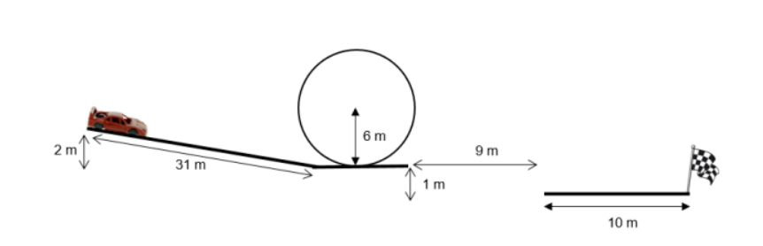

Ce projet consiste à simuler et calculer la faisabilité de défis liés à des voitures de course, en prenant en compte divers paramètres de physique appliquée et de modélisation.

import numpy as np
from scipy.integrate import odeint
import matplotlib.pyplot as plt
# Paramètres physiques et constants du modèle
m = 1498 # masse de la voiture en kilogrammes
rho = 1.2 # densité de l'air en kg/m^3
Cx = 0.35 # coefficient de traînée aérodynamique
l = 1.88 # largeur de la voiture en mètres
H = 1.30 # hauteur de la voiture en mètres
s = l * H # surface frontale de la voiture en m^2 (produit de la longueur et de la hauteur)
g = 9.81 # accélération due à la gravité en m/s^2
theta = 3.69 # angle d'inclinaison en degrés
kx = 1/2 * s * rho * Cx # terme regroupant les constantes pour la force de traînée de l'air
R = m*g*np.cos(np.radians(theta)) # calcul de la réaction normale en N
µ = 0.1 # coefficient de frottement
a = 5.3 # accélération moyenne supposée en m/s^2
F = m * a # force motrice externe en N
f = µ*R
# Conditions initiales du système
x0 = 0 # position initiale de la voiture en mètres
v0 = 0 # vitesse initiale de la voiture en m/s
S_init = [x0, v0] # liste des conditions initiales
# Fonction qui modélise les équations différentielles du système
def Sp(S, t):
Sp = [
v0,
(m * g * np.sin(np.radians(theta)) - kx * v0**2 - f + F) / m
]
return Sp
# Création d'un intervalle de temps pour la simulation
t = np.linspace(0, 3, 100) # temps allant de 0 à 4 secondes, avec 101 points
# Résolution des équations différentielles avec odeint
S = odeint(Sp, S_init, t)
# Calcul de la distance parcourue à chaque instant
distance = np.cumsum(S[:, 1] * np.diff(np.insert(t, 0, 0)))
plt.figure(figsize=(12, 5))
plt.plot(distance, S[:, 1])
plt.xlabel('Distance (m)')
plt.ylabel('Vitesse (m/s)')
plt.title('Vitesse en m/s en fonction de la distance')
plt.xlim([0, 31])
plt.ylim([0, 17])
plt.grid()
plt.show()
plt.figure(figsize=(12, 5))
plt.plot(t, S[:, 1])
plt.xlabel('Temps (s)')
plt.ylabel('Vitesse (m/s)')
plt.title('Vitesse en m/s en fonction du temps')
plt.grid()
plt.show()
import numpy as np
from scipy.integrate import odeint
import matplotlib.pyplot as plt
# Paramètres physiques et constants du modèle
m = 1498 # masse de la voiture en kilogrammes
rho = 1.2 # densité de l'air en kg/m^3
Cx = 0.35 # coefficient de traînée aérodynamique
l = 1.88 # largeur de la voiture en mètres
H = 1.30 # hauteur de la voiture en mètres
s = l * H # surface frontale de la voiture en m^2 (produit de la longueur et de la hauteur)
g = 9.81 # accélération due à la gravité en m/s^2
theta = 3.69 # angle d'inclinaison en degrés
kx = 1/2 * s * rho * Cx # terme regroupant les constantes pour la force de traînée de l'air
R = m*g*np.cos(np.radians(theta)) # calcul de la réaction normale en N
µ = 0.1 # coefficient de frottement
a = 5.3 # accélération moyenne supposée en m/s^2
F = m * a # force motrice externe en N
f = µ*R
# Conditions initiales du système
x0 = 0 # position initiale de la voiture en mètres
v0 = 0 # vitesse initiale de la voiture en m/s
S_init = [x0, v0] # liste des conditions initiales
# Fonction qui modélise les équations différentielles du système
def Sp(S, t):
Sp = [
v0,
(m * g * np.sin(np.radians(theta)) - kx * v0**2 - f + F) / m
]
return Sp
# Création d'un intervalle de temps pour la simulation
t = np.linspace(0, 3, 100) # temps allant de 0 à 4 secondes, avec 101 points
# Résolution des équations différentielles avec odeint
S = odeint(Sp, S_init, t)
# Calcul de la distance parcourue à chaque instant
distance = np.cumsum(S[:, 1] * np.diff(np.insert(t, 0, 0)))
plt.figure(figsize=(12, 5))
plt.plot(distance, S[:, 1])
plt.xlabel('Distance (m)')
plt.ylabel('Vitesse (m/s)')
plt.title('Vitesse en m/s en fonction de la distance')
plt.xlim([0, 31])
plt.ylim([0, 17])
plt.grid()
plt.show()
plt.figure(figsize=(12, 5))
plt.plot(t, S[:, 1])
plt.xlabel('Temps (s)')
plt.ylabel('Vitesse (m/s)')
plt.title('Vitesse en m/s en fonction du temps')
plt.grid()
plt.show()
import numpy as np
from scipy.integrate import odeint
import matplotlib.pyplot as plt
# Paramètres de l'équation
m = 1498 # masse (kg)
g = 9.81 # accélération due à la gravité
µ = 0.1 # coefficient de frottement
a = 5.3 # Accélération moyenne
F = m * a # force motrice externe (N)
r = 6 # rayon du looping (m)
L = 1.88 # Largeur
h = 1.30 # hauteur
s = L*h # aire de la voiture
Cx = 0.35 # coefficient de traînée
rho = 1.2 # densité de l'air (kg/m^3)
# Fonction représentant les équations différentielles
def Sploop(Sl, t):
# Calcul de la force normale Rn à partir de la composante radiale
R1 = m * r * Sl[1]**2 - m * g * np.cos(Sl[0])
# Calcul de la force de frottement de l'air
Fx1 = 0.5 * Cx * s * rho * Sl[0]**2 * r
# Équation pour la composante tangentielle (accélération angulaire)
Sploop = np.array([
Sl[1],
(F - µ * R1 - m * g * np.sin(Sl[0]) - Fx1) / (m * r)
])
return Sploop
# Conditions initiales
theta0 = 0 # angle initial (rad)
omega0 = 17 / r # vitesse angulaire initiale (rad/s) correspondant à 17 m/s à la circonférence
S_init = [theta0, omega0]
# Intervalle de temps
t = np.linspace(0, 3, 1000) # pour un tour complet (0 à 2*pi), avec 1000 points
# Résolution des équations différentielles
S = odeint(Sploop, S_init, t)
# Extraction des résultats
theta = S[:, 0]
omega = S[:, 1]
# Calcul de la vitesse tangentielle
vitesse_tangentielle = r * omega
# Stockage de la vitesse de sortie du looping
v_sortie_looping = vitesse_tangentielle[-1]
print(f"La vitesse de sortie du looping est de {v_sortie_looping}")
# Tracé des graphiques
plt.figure(figsize=(10, 8))
plt.subplot(3, 1, 1)
plt.plot(t, theta)
plt.title('Angle $\\theta$ en fonction du temps')
plt.xlabel('Temps (s)')
plt.ylabel('Angle $\\theta$ (rad)')
plt.subplot(3, 1, 2)
plt.plot(t, omega)
plt.title('Vitesse angulaire $\\omega$ en fonction du temps')
plt.xlabel('Temps (s)')
plt.ylabel('Vitesse angulaire $\\omega$ (rad/s)')
import numpy as np
from scipy.integrate import odeint
import matplotlib.pyplot as plt
# Paramètres de l'équation
m = 1498 # masse (kg)
g = 9.81 # accélération due à la gravité
L = 1.88 # Largeur
h = 1.30 # hauteur
A = L*h # aire de la voiture
Cd = 0.35
T = Cd*A
P = A*0.3# coefficient de traînée
ρ = 1.2 # densité de l'air (kg/m^3)
#d = 9 # longueur du ravin (m)
h0 = 1 # hauteur initiale de la voiture (m)
# Conditions initiales
x0 = 0 # position initiale en x (m)
y0 = h0 # position initiale en y (m)
vx0 = v_sortie_looping # vitesse initiale en x (m/s) correspondant à la vitesse de sortie du looping
vy0 = 0 # vitesse initiale en y (m/s)
S_init = [x0, y0, vx0, vy0]
# Fonction représentant les équations différentielles
def Sp(S, t):
Sp = [
S[2],
S[3],
(-ρ / (2 * m)) * (np.sqrt(S[2]**2 + S[3]**2)) * (T * S[2] + P * S[3]),
(-ρ / (2 * m)) * (np.sqrt(S[2]**2 + S[3]**2)) * (T * S[3] - P * S[2]) - g
]
return Sp
# Intervalle de temps
t = np.linspace(0, 0.45, 1000) # temps allant de 0 à 0.5 secondes, avec 1000 points
# Résolution des équations différentielles
S = odeint(Sp, S_init, t)
# Extraction des résultats
x = S[:, 0]
y = S[:, 1]
vx = S[:, 2]
vy = S[:, 3]
# Calcul de la vitesse
vitesse = np.sqrt(vx**2 + vy**2)
# Stockage de la vitesse de sortie du Ravin
v_sortie_Ravin = vitesse[-1]
print(f"La vitesse de sortie du Ravin est de {v_sortie_Ravin}")
# Tracé des graphiques
plt.figure(figsize=(10, 8))
plt.subplot(2, 1, 1)
plt.plot(x, y)
plt.grid()
plt.title('Trajectoire de la voiture dans le ravin')
plt.subplot(2, 1, 2)
plt.plot(t, vitesse)
plt.title('Vitesse de la voiture en fonction du temps')
plt.xlabel('Temps (s)')
plt.ylabel('Vitesse (m/s)')
plt.grid()
plt.show()
import numpy as np
from scipy.integrate import odeint
import matplotlib.pyplot as plt
m = 498
p = 1.2
Cx = 0.35
l = 1.88
H = 1.30
S = l * H
g = 9.81
kx = 1/2 * S * p * Cx
R = m * g
µ = 0.1
a = 5.1
f = m * a
def Spplat(S, t):
Spplat = [
v_sortie_looping,
- (kx * v_sortie_looping**2) / m - (R * µ) / m + F / m
]
return Spplat
# Conditions initiales du système
x0 = 0
v0 = v_sortie_Ravin
S_init = [x0, v0]
t = np.linspace(0, 1, 100)
S = odeint(Spplat, S_init, t)
distance = np.cumsum(S[:, 1] * np.diff(np.insert(t, 0, 0)))
plt.figure(figsize=(12, 5))
plt.plot(t, S[:, 1])
plt.xlabel('Temps (s)')
plt.ylabel('Vitesse (m/s)')
plt.grid()
plt.title('Vitesse en m/s en fonction du temps')
plt.figure(figsize=(12, 5))
plt.plot(distance, S[:, 1])
plt.xlabel('Distance (m)')
plt.ylabel('Vitesse (m/s)')
plt.grid()
plt.title('Vitesse en m/s en fonction de la distance')
plt.xlim([0, 10])
plt.show()
plt.figure(figsize=(12, 5))
plt.plot(t, S[:, 1])
plt.xlabel('Temps (s)')
plt.ylabel('Vitesse (m/s)')
plt.grid()
plt.title('Vitesse en m/s en fonction du temps')
plt.figure(figsize=(12, 5))
plt.plot(distance, S[:, 1])
plt.xlabel('Distance (m)')
plt.ylabel('Vitesse (m/s)')
plt.grid()
plt.title('Vitesse en m/s en fonction de la distance')
plt.xlim([0, 10])
plt.show()
Retour au portfolio